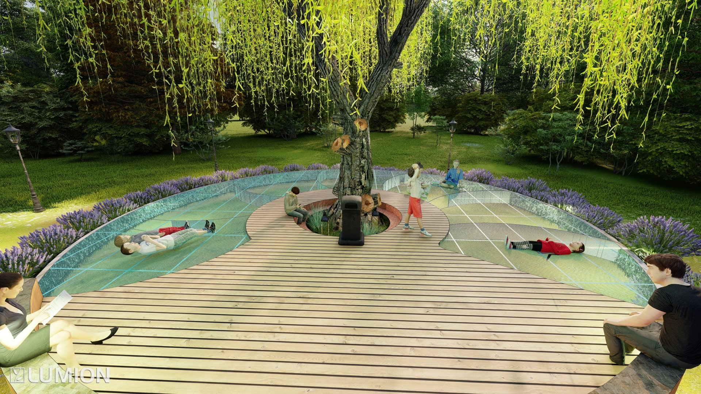
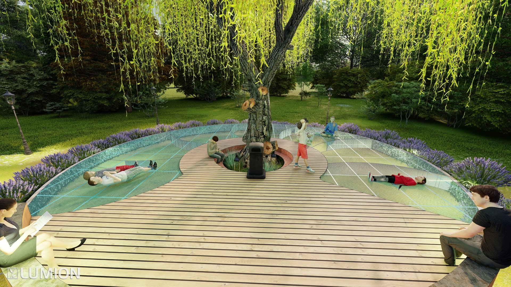
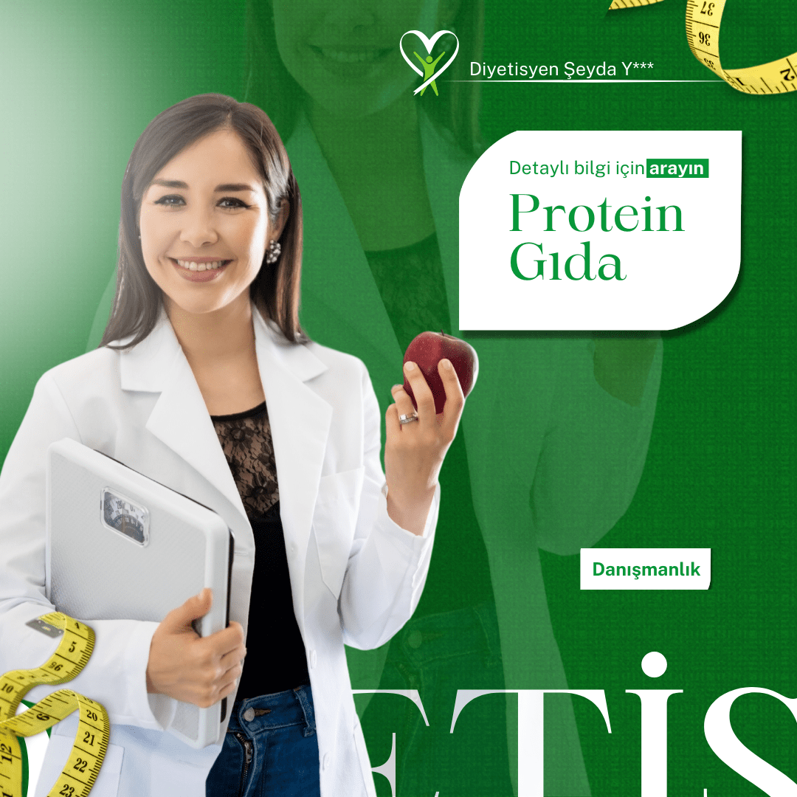
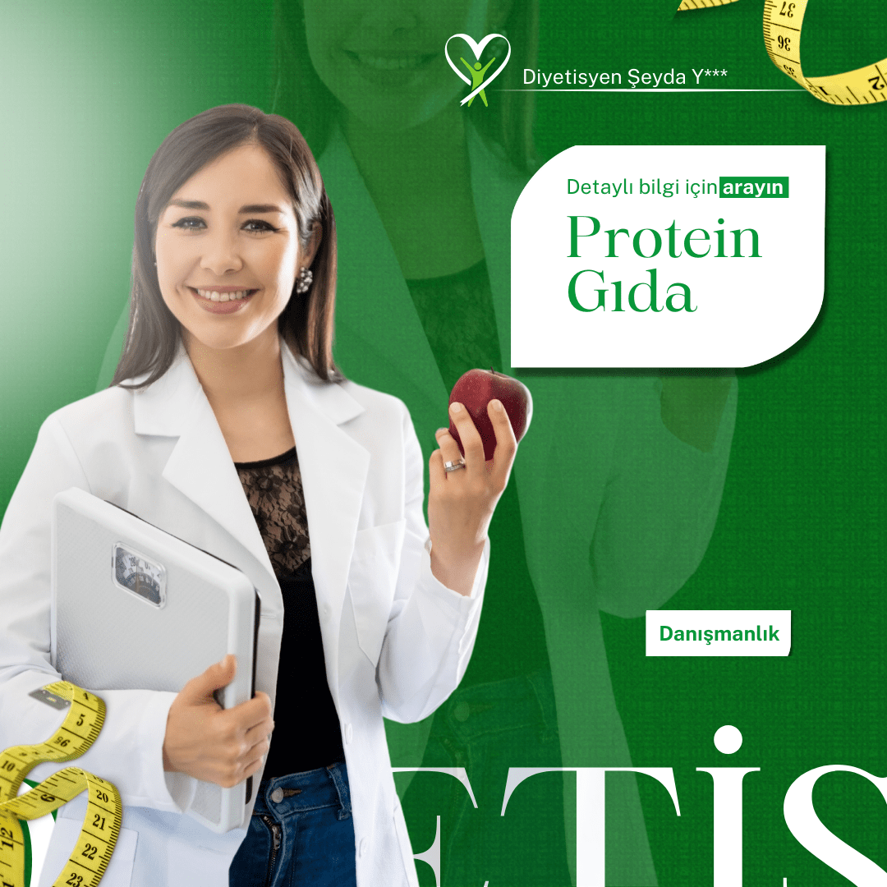
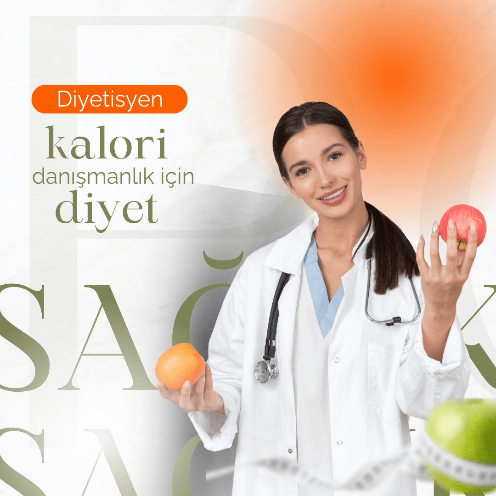
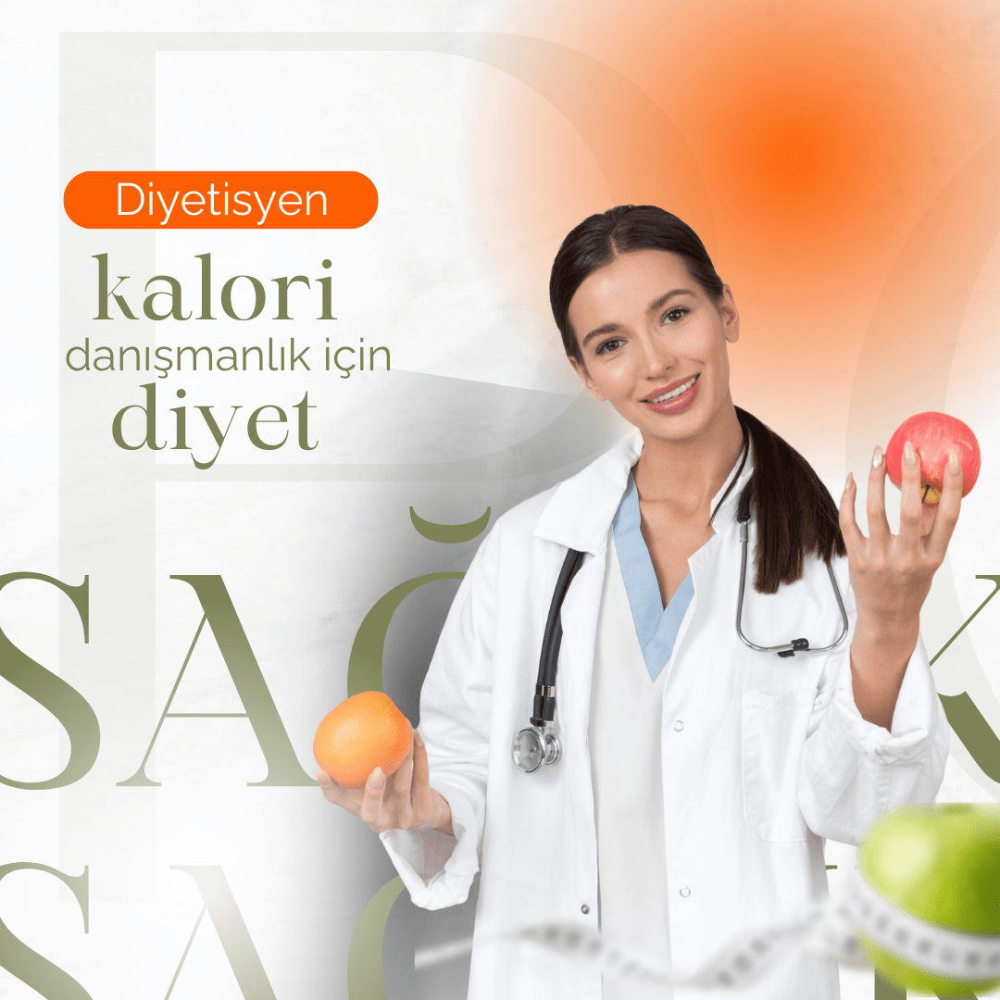

Merhaba! Ben İrem Başkılıç, peyzaj mimarı ve grafik tasarımcı olarak tasarım dünyasında yol alıyorum.
Üniversite yıllarımda peyzaj mimarlığıyla doğayı, grafik tasarımla estetiği keşfettim. Her proje, bana bir hikaye anlatma fırsatı verdi; ister bir park tasarımı, ister sosyal medya postu olsun, her detayıyla bir mesaj taşımak benim için önemliydi.
Bugün, yaratıcı çözümler üreten ve kullanıcı deneyimini ön planda tutan bir tasarımcı olarak, projelerime kendi dokunuşumu katmayı sürdürüyorum. Tasarım benim için sadece bir iş değil, bir yolculuk, bir ifade biçimi ve her zaman yeni bir hikaye anlatma şansı.

Projenin Amacı: Tipografik afişlerle sosyal medya etkileşimini artırmak.
Katkılarım: Renk paleti seçimi, 3D efekt uygulamaları, tipografi tasarımı.
Sonuç ve Potansiyel: Daha fazla görsel etkileşim ve marka farkındalığı sağlandı.
Anahtar Kelimeler: Grafik tasarımcı, peyzaj mimarı, tasarımcı


Projenin Amacı: Peyzaj mimarlığı projelerini 3D olarak görselleştirmek.
Katkılarım: 3D modelleme, render ayarları, detaylı görselleştirme.
Sonuç ve Potansiyel: Müşteri sunumlarında daha anlaşılır ve etkileyici sonuçlar sağlandı.
Anahtar Kelimeler: Peyzaj mimarı, tasarımcı, görselleştirme
 

Projenin Amacı: Instagram ve diğer platformlar için etkileşim artırıcı postlar.
Katkılarım: Tipografi, renk paleti, görsel düzenleme.
Sonuç ve Potansiyel: Takipçi etkileşimi ve marka farkındalığı artırıldı.
Anahtar Kelimeler: Grafik tasarımcı, sosyal medya, tasarımcı
 


 


Projenin Amacı: Online mağazalar için UX odaklı sayfa tasarımı.
Katkılarım: Görsel düzen, 3D öğeler, kullanıcı deneyimi optimizasyonu.
Sonuç ve Potansiyel: Kullanıcı deneyimi arttı, satış potansiyeli yükseldi.
Anahtar Kelimeler: UX tasarımcı, e-ticaret, tasarımcı